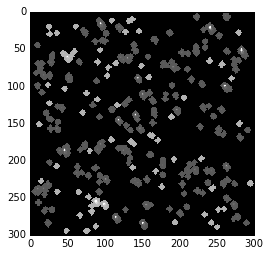
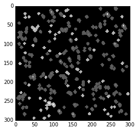

Note
This tutorial is based on an IPython notebook that can be downloaded here.
Tutorial¶
For this tutorial, we will do photometry on KIC 8462852, sometimes called “Tabby’s Star” or “Boyajian’s Star.” We’ll see if we can reproduce the long-term dimming detected by Montet and Simon (2016, ApJL, 830, 39; arXiv:1608.01316), shown below

The FFIs here are represented by the points labeled with green squares, black circles, red diamonds, and blue triangles, corresponding to the four different orientations of the Kepler spacecraft during its data-collecting primary mission.
The first thing we’ll do (after importing the module, of course) is instantiate the f3 “star” class.
from f3 import photometry
target = photometry.star(8462852, ffi_dir='../kepler_ffis/')
We’ve created an object called target, defined our target based on its KIC, and pointed the object to the directory where we store our Full Frame Images. By default, f3 will look for the FFIs in the “ffidata” subdirectory of your working directory, so if they’re already there, you don’t need to pass through this information.
“target” has various data and methods attached to it. At any time, we can find a list of those
dir(target)
['__class__', '__delattr__', '__dict__', '__doc__', '__format__', '__getattribute__', '__hash__', '__init__', '__module__', '__new__', '__reduce__', '__reduce_ex__', '__repr__', '__setattr__', '__sizeof__', '__str__', '__subclasshook__', '__weakref__', 'adjust_aperture', 'calc_centroids', 'calc_fluxes', 'data_for_target', 'define_spotsignal', 'do_photometry', 'do_rolltest', 'ffi_dir', 'find_other_sources', 'generate_panel', 'kic', 'make_postcard', 'mini_lc', 'obs_filenames', 'onclick', 'qs', 'times', 'year']
You’ll see some python defaults, some info we’ve supplied (for example, target.kic is equal to 8462852), and some functions we
will shortly run.
Let’s try one of these. We’ll make a postcard region of data (which is bigger than a traditional Kepler postage stamp)
target.make_postcard()
The step above takes all the FFIs and locates a small region centered on the target. It takes three optional arguments. npix is the size of the square postcard region. shape=(1070,1132) is the size of the FFIs, which can be changed if you’re adapting the code to something other than Kepler FFIs (such as TESS data). buffer_size avoids the outermost pixels on the detector, so that each target should have its entire PSF on the detector.
If you run dir(target), you’ll now see additional data: target.postcard and target.integrated postcard,
which np.shape will show you have shapes (52, 300, 300) and (300, 300)—this is the postcard region
and the same region summed over all observations and collapsed into 2d, representing effectively a 26 hour integration
with Kepler.
Now that we have our postcard, let’s find all the sources on it.
target.find_other_sources(plot_flag=True)
This step will draw apertures around the target star and up to ntargets additional targets on the same postcard.
It will then remove apertures that touch the border of the postcard and combine apertures that touch into one target,
treating those stars as a single object for the rest of the procedure.
The plot_flag argument will show a stacked plot of the postcard images, then a plot of all apertures for all
targets, then a plot of the default aperture for the primary target, and finally data for the entire postcard,
with apertures for all targets highlighted over the data, as shown below.

 

Now that we know where our target star is and where our reference stars are, it’s time to do photometry!
Perhaps the initial aperture isn’t appropriate, because it contians another star or doesn’t capture the entire PSF,
for example. In this case, we can use adjust_aperture to adjust the aperture. It will open up a window showing
the aperture (and underlying data) and the current light curve for the target star. By clicking on individual pixels,
you can include or exclude them from the aperture. Closing the panel will then cause the photometry pipeline to re-run,
and you can see how the light curve has changed from including/excluding those pixels. This will repeat until the
image is closed without any changes to the aperture.
Clicking on the zeroth row/column (on the top or left) will cause all pixels in that column/row (respectively) to be
turned off. Re-running find_other_sources will restart this procedure, giving you back the default aperture.
target.adjust_aperture()

The times of observations will then be found in target.times, and the flux values in target.obs_flux.
You’ll also find a few other new variables in there, which include the raw flux for the target star and for the
reference stars, before using the reference stars as calibrators.
Everything should slowly be decreasing in that case, which I think is due to degradation of the detector in the
harshness of space. target.flux_uncert will give you an estimate of the uncertainties from fitting a line to the
data and estimating the scatter around that line.
Instead of adjust_aperture we could run data_for_target instead, which produces the same results without
the abilities for the user to view and adjust the aperture.
Let’s see how it looks!
fmt = ['ko', 'rD', 'b^', 'gs']
for i in xrange(4):
g = np.where(target.qs == i)[0]
plt.errorbar(target.times[g], target.obs_flux[g], yerr=target.flux_uncert[i], fmt=fmt[i])

This looks like the result from Montet and Simon!
The error bars are overestimated in this case—they represent the residuals to a linear fit to the data,
which is clearly inappropriate for this star. Dan Foreman-Mackey’s kepcal package will take in data in
the format f3 produces and can be used to infer uncertainties from the data itself, but this has yet
to be incorporated into f3 itself. Stay tuned!
With this, you can produce simple photometry for all stars in the Kepler field. Feel free to play around with it,
try some of the different flags available in each of the steps, and see where f3 succeeds and where it struggles
(namely, faint stars in crowded fields, when the star’s PSF is encroached on by another star of equal or greater
brightness). If you have any ideas on improvement, feel free to fork the repository and create a pull request.